Hi, I'm Madeline, a Computer Science freshman at William & Mary with a foundation in web development, UX, and visual design. My goal is to combine clean code and intentional visual design to build user-centered digital experiences.
My Websites
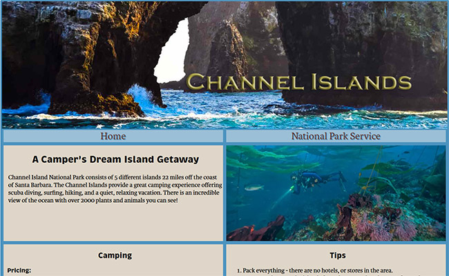
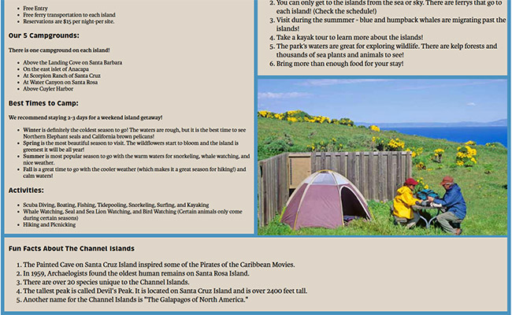
Channel Islands National Park
This site shows a grid-based layout and my first attempt at responsive design.
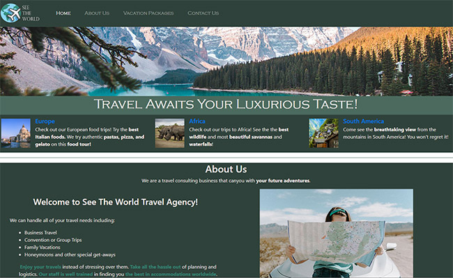
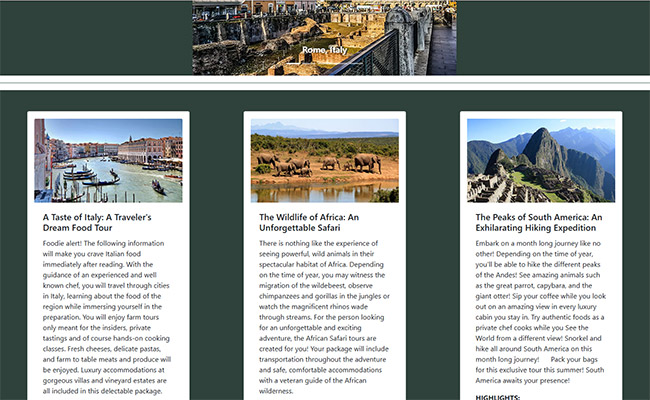
See the World Travel Agency
This site showcases my work using Bootstrap and Dreamweaver templates, with a focus on responsive design.
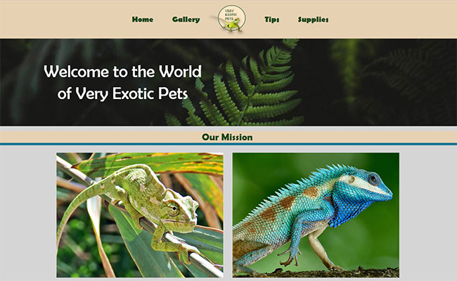
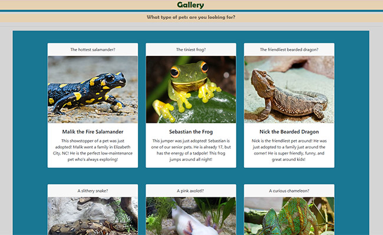
Exotic Pets
The site showcases my pre-assessment work for Web Design Year 2 using the Bootstrap framework along with custom HTML and CSS to design a fictional pet shop.
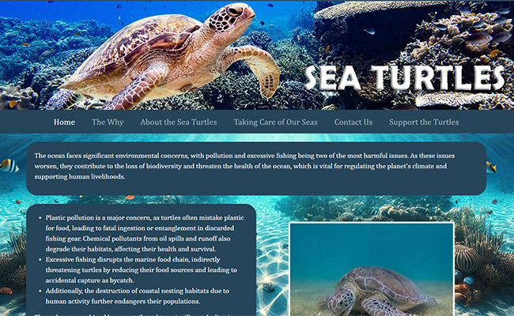
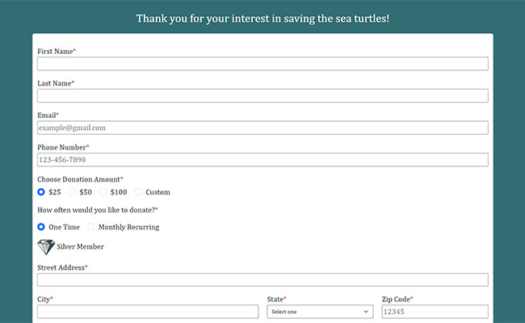
Sustainable Seas
I created a Sustainable Seas website focused on sea turtle conservation. Using JavaScript, I also built a dynamic donation form.
Team Projects
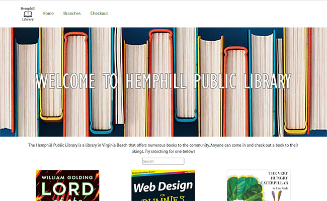
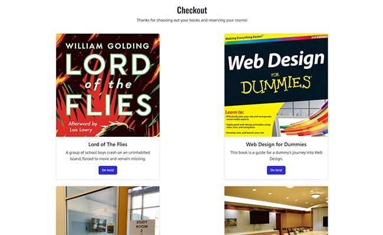
Great Computer Challenge - Year 1
As part of a team of five, we created a website for Hemphill Library in just three hours during the Great Computer Challenge. I led the wireframing and planning process, and we earned first place.
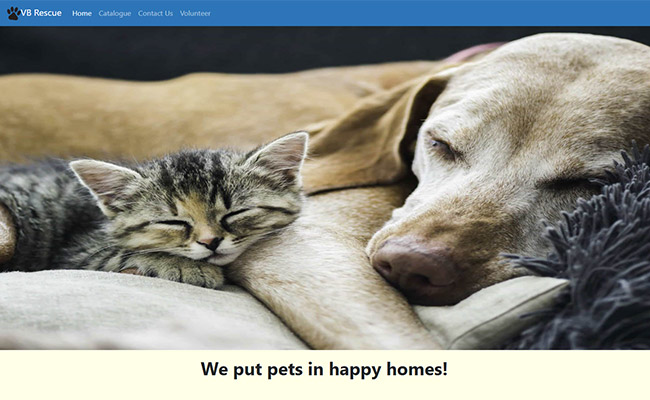
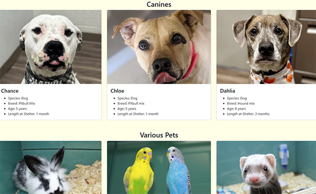
Great Computer Challenge - Year 2
As part of a team of five, we built a pet rescue website in three hours. We completed all requirements and earned first place.
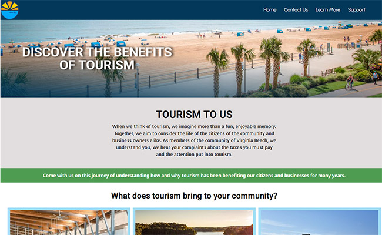
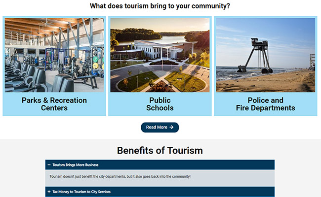
Digital Video Production - FBLA
For our FBLA competition, my team created a WordPress site exploring the importance of tourism in Virginia Beach. This was our first experience using WordPress.
PHOTOSHOP WORK
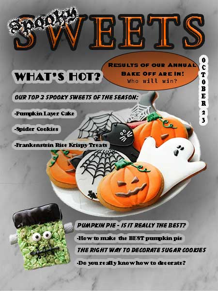
Spooky Sweets Magazine Cover
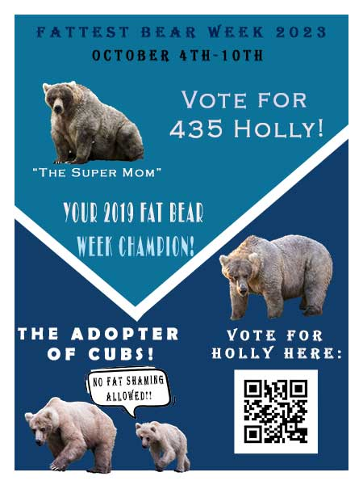
Fat Bear Week Poster 2023
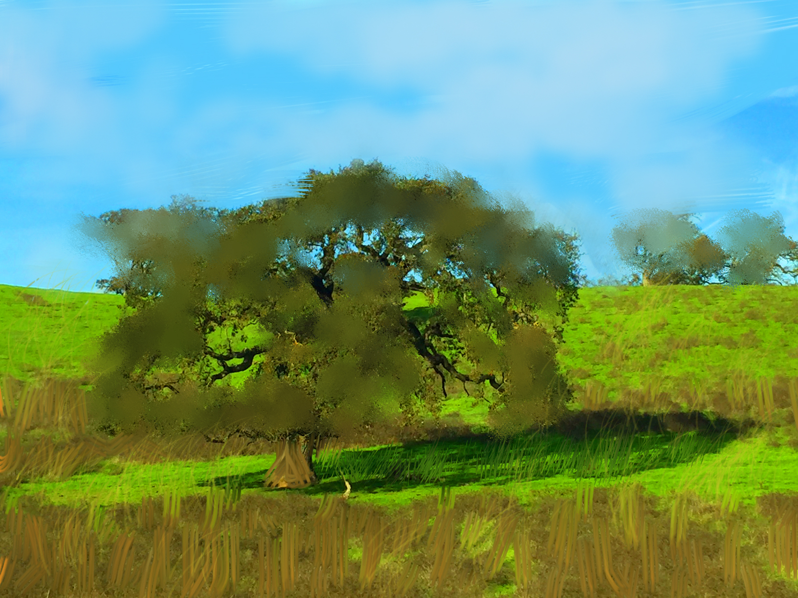
Tree Painting
Hover to see the before!